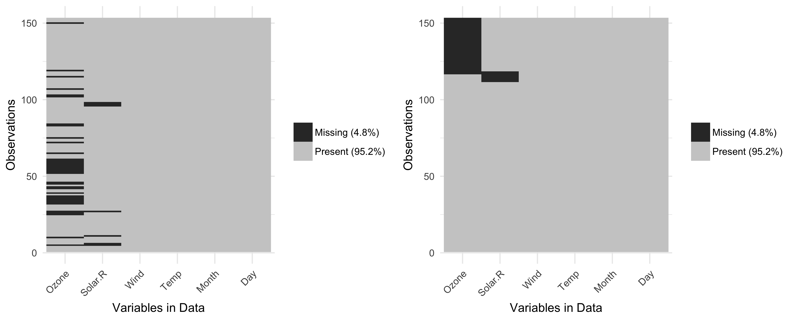
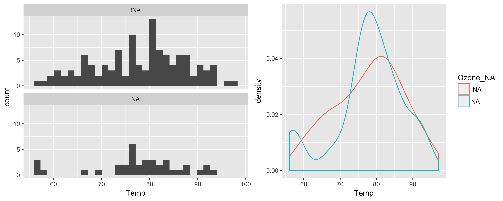
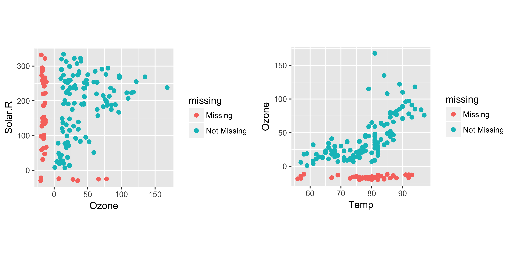

Building on ggplot2 for exploration of missing values
Nicholas Tierney
2017-01-14
Introduction
Missing values are ubiquitous in data and need to be explored and handled in the initial stages of analysis. This paper describes a package, naniar, for exploring missing data dependencies with minimal deviation from the common workflows of ggplot and tidy data (Wickham,2014). Typically, ggplot2 throws an warning about missings but then omits them for plotting (Wickham,2009). This extension builds data structures and functions that ensure missings are plotted easily and enables imputations to be examined. Principles of tidy data states that each row is an observation and each column is a variable, which makes it easy and consistent to perform data manipulation and wrangling. However, there are currently no guidelines for representing additional missing data structures in a tidy format. This paper describes approaches for exploring missing data structure with minimal deviation from the common workflows of ggplot and tidy data structures.
Missing Data Mechanisms
Canonical sources of missing data are questionnaires. Data obtained from questionnaires are often subject to both unknown and known missingness structure. Unknown missing data structure may arise from respondents accidentally failing to answer questions or inadvertently providing inappropriate answers. Known missing data structure data may arise due to the structure of the questionnaire. For example, the first question on a survey might be: ‘If YES, skip to question 4’, resulting in questions 2 and 3 missing. If the structure of the questionnaire is known, this type of missingness can be evaluated easily. However, if this information is not available, the mechanism responsible for producing missing data must be inferred from the data. Longitudinal studies are also sources of missing data, where participants may not return for future testing sessions. In these cases it is difficult, sometimes impossible, to ascertain the reason for the dropouts, and hence, whether the missingness structure is known or unknown. In the physical sciences like climate and air quality data, measuring instruments fail leading to missing values.
There are a two approaches to analysis of data with missing values, deletion and imputation. Deletion methods drop variables or cases, depending on the amount of missing data, and imputation methods replace the missing values with some other value estimated from the data. It is now widely regarded as best practice to impute these values, however in order for estimates to be unbiased, it is essential to understand the missingness structure and mechanisms (Little,1988; Rubin,1976; Simon-simonoff, Schafer,2002).
Existing packages for handling missing data
Software focussing on missing data typically focus on imputation or visualisation. Packages such as mice, mi, norm, and Amelia provide functions to facilitate imputation, and use a wide range of methods, from mean or median imputation, to regression or machine learning, to Bayesian methodologies, as well as providing diagnostics on the imputations themselves (mice; mi; norm; Amelia).
Missing data visualisation packages include the R package VIM, and the stand alone software MANET, ggobi, MissingDataGUI, and to a more limited extent, ggplot2 (Cheng,2015; Unwin,1996; Swayne,2003; vim; Wickham,2009). MANET (Missings Are Now Equally Treated), provides univariate visualisations of missing data using linked brushing between a reference plot of the missingness for each variable, and a plot of the data as a histogram or barplot. ggobi extends the univariate linked brushing of MANET to multivariate, using parallel co-ordinate plots. ggobi also provided incorporated missingness into scatterplots, displaying missing values from one variable as 10% below the minimum value on the other axis. MissingDataGUI provides a user interface for exploring missing data structure both numerically and visually. Using a GUI to explore missing data makes it easier to glean valuable insights into important structures, but may then make it hard to incorporate these unscripted insights into reproducible analyses, and may also distract and break the workflow from statistical analysis.
VIM (Visualising and Imputing Missing Data) is an R package that provides methods for both imputation and visualisation of missing data. In particular it provides visualisations that identify observed, imputed, and missing values. VIM also identifies imputed cases by adding a suffix to a variable, so Var1 would have a sibling indicator column, Var1_imp, where each case is TRUE or FALSE to indicate imputation. Although VIM provides R functions to visualise and impute missing data, it’s syntax for data manipulation and visualisation is difficult to extend, and does not follow tidy data principles. ggplot2 currently only provides visualisation of missing values for categories treating categories as NA values. For all other plots, ggplot2 prints a warning message of the number of missing values omitted.
There are many ways to explore missing data structure and imputation, however there is no unified methodology to explore, or visualise missing data. We now discuss ways to represent missing data that fit in with the grammar of graphics and tidy data.
Data structures for missing data
Representing missing data structure is achieved using the shadow matrix, introduced in Swayne and Buja (Swayne + Buja 1998). The shadow matrix is the same dimension as the data, and consists of binary indicators of missingness of data values, where missing is represented as “NA”, and not missing is represented as “!NA”. Although these may be represented as 1 and 0, respectively. This representation can be seen in figure 1 below, adding the suffix “_NA" to the variables. This structure can also be extended to allow for additional factor levels to be created. For example 0 indicates data presence, 1 indicates missing values, 2 indicates imputed value, and 3 might indicate a particular type or class of missingness, where reasons for missingness might be known or inferred. The data matrix can also be augmented to include the shadow matrix, which facilitates visualisation of univariate and bivariate missing data visualisations. Another format is to display it in long form, which facilitates heatmap style visualisations. This approach can be very helpful for giving an overview of which variables contain the most missingness. Methods can also be applied to rearrange rows and columns to find clusters, and identify other interesting features of the data that may have previously been hidden or unclear.

Figure 1. Illustration of data structures for facilitating visualisation of missings and not missings.
Visualising missing data
Heatmap
A missing data heatmap is shown below using the vis_miss command from the visdat package. This displays the the airquality dataset included in base R, which contains Daily air quality measurements in New York, May to September 1973.
library(visdat)
p1 <- vis_miss(airquality)
p2 <- vis_miss(airquality, cluster = TRUE)
gridExtra::grid.arrange(p1,p2,ncol = 2)
Figure 2. Heatmaps of missing data (left) raw (right) ordered by clustering on rows and columns.
Similar approaches have been used in other missing data packages such as VIM, mi, Amelia, and MissingDataGUI. However this plot is created in the ggplot framework, giving users greater control over the plot appearance. The user can also apply clustering of the rows and columns using the cluster = TRUE argument (shown on the right).
Univariate plots split by missingness
An advantage of the augmented shadow format, where the data and shadow are side by side, is that it allows for examining univariate distributions according to the presence or absence of another variable. The plot below shows the values of temperature when ozone is present and missing, on the left is a faceted histogram, and on the right is an overlaid density.
library(naniar)
library(ggplot2)
p1 <- ggplot(data = bind_shadow(airquality),
aes(x = Temp)) +
geom_histogram(na.rm = TRUE) +
facet_wrap(~Ozone_NA,
ncol = 1)
p2 <- ggplot(data = bind_shadow(airquality),
aes(x = Temp,
colour = Ozone_NA)) +
geom_density(na.rm = TRUE)
gridExtra::grid.arrange(p1,p2,ncol = 2)## `stat_bin()` using `bins = 30`. Pick better value with `binwidth`.
Figure 3., Two representations of temperature showing missingness on ozone (left) facetted, (right) coloured. Main difference in the distribution is that there is a cluster of low temperature observations with missing ozone values.
Using this data structure allows for the user to directly refer to the variable for which they want to explore the effect of missingness using the suffix _NA after the variable. In the case above, the user is looking at a histogram of temperature, but is then able to look at how many temperature values are affected by missingness of ozone. In cases where there is no missing data in the variable that they want to “split” the missingness by, the plot simple returns a single facetted plot.
Another method of visualisation can be explored using geom_missing_point() from the naniar package:
p1 <- ggplot(data = airquality,
aes(x = Ozone,
y = Solar.R)) +
geom_missing_point() +
theme(aspect.ratio = 1)
p2 <- ggplot(data = airquality,
aes(x = Temp,
y = Ozone)) +
geom_missing_point() +
theme(aspect.ratio = 1)
gridExtra::grid.arrange(p1,p2,ncol=2)
Figure 4., Scatterplots with missings displayed at 10% below (left) ozone versus and solar radiation (right) ozone versus temperature.
This replaces missing values to be 10% below the minimum value, a technique borrowed from ggobi. The missing values are also different colours to make missingness pre-attentive (Treisman,1985). In this plot we see that there is a mostly uniform spread of missing values for Solar.R and Ozone. As geom_missing_point is a defined geometry for ggplot2, it allows users to have full customisation as they normally would with ggplot.
Numerical Summaries for missing data
Numerical summaries of missing data are also made easy with some helper functions from the naniar package, which provides tidy functions that return either single numbers or dataframes. The percent_missing_* functions help find the proportion of missing values in the data overall, in cases, or in variables.
# Proportion elements in dataset that contains missing values
miss_df_pct(airquality)## [1] 4.793028# Proportion of variables that contain any missing values
miss_var_pct(airquality)## [1] 33.33333 # Proportion of cases that contain any missing values
miss_case_pct(airquality)## [1] 27.45098We can also look at the number and percent of missings in each case and variable with summary_missing_case, and summary_missing_var.
miss_case_summary(airquality)## # A tibble: 153 × 3
## case n_missing percent
## <int> <int> <dbl>
## 1 1 0 0.00000
## 2 2 0 0.00000
## 3 3 0 0.00000
## 4 4 0 0.00000
## 5 5 2 33.33333
## 6 6 1 16.66667
## 7 7 0 0.00000
## 8 8 0 0.00000
## 9 9 0 0.00000
## 10 10 1 16.66667
## # ... with 143 more rowsmiss_var_summary(airquality)## # A tibble: 6 × 3
## variable n_missing percent
## <chr> <int> <dbl>
## 1 Ozone 37 24.183007
## 2 Solar.R 7 4.575163
## 3 Wind 0 0.000000
## 4 Temp 0 0.000000
## 5 Month 0 0.000000
## 6 Day 0 0.000000Tabulations of the number of missings in each case or variable can be calculated with table_missing_case and table_missing_var.
miss_case_table(airquality)## # A tibble: 3 × 3
## n_missing_in_case n_cases percent
## <int> <int> <dbl>
## 1 0 111 72.54902
## 2 1 40 26.14379
## 3 2 2 1.30719miss_var_table(airquality)## # A tibble: 3 × 3
## n_missing_in_var n_vars percent
## <int> <int> <dbl>
## 1 0 4 66.66667
## 2 7 1 16.66667
## 3 37 1 16.66667Discussion
In this paper we discussed missing data mechanisms, existing packages for imputation and visualisation of missing data, and the limitations of current missing data exploration and visualisation software. We then discussed data structures for missing data, and showed how these can be used following tidy data principles, and how to effectively present visualisations and numerical summaries using the R packages naniar and visdat, available for download on github: https://github.com/njtierney/naniar, and https://github.com/njtierney/visdat.
It is worthwhile to note the trade off between storage and computation of the augmented shadow matrix. When storage of data is an issue, it may not be practical to bind the shadow matrix to the regular data. Instead, it may be more effective to perform the computation for the column of interest when necessary. However, the shadow matrix can also allow for more complex types of missingness to be expressed, and so there are additional benefits to storing data in this way. For example, missing, NA, and not missing, !NA, could be extended to describe different mechanisms for missingness, e.g., NA_mechanism_A, and NA_mechanism_B, or even imputed values value_imputed. These could then be combined with the same sorts of plots and numerical summaries to provide diagnostics. These data structures should facilitate future research in missing data handling and imputation methods.
Future research should focus on developing techniques for identifying missingness mechanisms and methods for encoding mechanisms into the shadow matrix. Further work could also be done on developing methods to store single and multiple imputations into the shadow matrix, and methods to visualise these imputations using ggplot geoms, and assess them with numerical summaries.